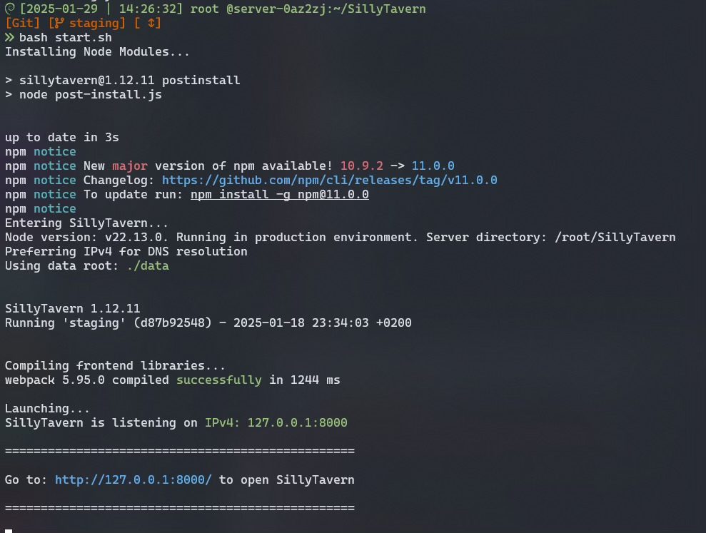

VPS 云端部署酒馆与Clewd
本文档详细介绍了如何在云服务器上部署SillyTavern酒馆与Clewd。首先,强调了选择合适的境外服务器的重要性,并提供了服务器配置、系统选择、安全设置等方面的详细步骤。接着,阐述了如何安装Git和Node.js等必要环境,以及如何克隆和配置SillyTavern。最后,强调了配置config.yaml文件的重要性,特别是监听远程连接、端口设置、白名单模式和登录设置等关键选项,以确保酒馆的安全和稳定运行。
作者：染月青花
那么首先, 你要有一台云服务器, 请自行解决这个问题, 无论是选择几大服务器供应商, 还是什么奇怪的东西, 这点上请自行其便。唯一一点忠告就是, 尽量选择位置合适的境外服务器, 服务器自身既不在墙内(服务器可以畅通无阻的连上各家LLM), 并且服务器自身没有被墙(你自己的设备能畅通无阻的连上服务器)
1 服务器自身的配置
当你选择一台服务器之后,服务器供应商通常会给你提供一些可选的linux系统, windows server这个东西的部署不会包含在这里, 仅面向linux
1.1 系统的选择
系统的选择都没什么太大差别, debian/ubuntu或是其他什么你喜欢的,你只要知道你的系统如何使用包管理器和配置sshd就可以了(或者你知道什么, 熟悉什么, 就选什么),这一点上可以自行其便, 教程中将以 Debian12为例
然后, 在创建服务器实例的时候,记住你的服务器ip地址与填入的登录密钥
警告
重点! 如果你不打算配置密钥对登录,那么一定要填入一个强密码, 超强密码,因为弱密码几乎肯定会被扫描脚本暴力破解,然后你的服务器就成了人家随意进出控制的玩具了,不要抱有侥幸心理, 在你的服务器被拿去当肉鸡之后,服务器商不仅会封掉你的服务器, 甚至不给你退钱,这也是最轻的损失, 重则你的API会被泄露被人刷爆！
切记
记住你的密码
1.2 连接你的服务器
PS
接下来的教程使用的 linux 发行版为: Debian12
Windows10/11几乎都自带有OpenSSH这一工具, 可以直接用于诸多与服务器相关的操作 1. 首先, 打开你的 Windows 终端 或者 Windows PowerShell 2. 接着你可以输入
来查看你的ssh版本那么在此之后, 你就可以通过 ssh root@xxx.xxx.xxx.xxx 来登录你的服务器 其中, @前面的部分为你的用户名, 一般新服务器默认为root @之后的部分为你的服务器ip
1.3 服务器安全
那么进行到这一步了, 我们先等一下, 先不要急于连接, 已经建立的连接可以通过输入 exit 来退出
注意
如果你选择依赖强密码, 那么请跟随 1.3.1 修改ssh端口, 但这仍然是个具有风险的选择,强密码+高端口并不能完全保证服务器安全,或者, 在跟随 1.3.1 修改了端口之后, 进一步随着 1.3.2,去配置密钥对, 然后禁用密码登陆
1.3.1 修改ssh端口
在windows终端中通过
来登录你的服务器, 过程中会要求输入你的登录密码, 如果你还记得, 那么恭喜你, 你应该可以顺利登录并看到这样的界面
接着输入 nano /etc/ssh/sshd_config , 使用debian12自带的nano编辑器, 去修改sshd_config
将Port这一条修改为足够高的不常见端口:
范围: 10000 至 65535
如果 Prot 前面带有#, 说明这一行被注释了, 删掉#Port前面的#取消注释, 应当如下图所示
(别填个示例的12345!)
之后, 使用 Ctrl+O 快捷键来保存修改, 然后使用 Ctrl+X 来退出
接着, 输入
重启ssh服务, 来应用修改
然后, 在你的服务器供应商网站的控制台中, 找到安全组/防火墙一类的页面, 将你的新的ssh登录端口进行放行
它看起来是这个样子:

点击添加规则：

来源选择 全部IPv4地址 或 0.0.0.0/0
如果你知晓自己的公网ip并确保它是固定不变的(视地区和运营商政策而定, 如果你不确定, 那么还是放行全部来源), 可以尝试将来源设为你的ip, 否则, 直接选择 全部IPv4地址 或 0.0.0.0/0
协议选择 TCP 端口填入你刚才设置的端口 12345
下一次在连接登录的时候, 默认的 root@xxx.xxx.xxx.xxx 方法去连接的是22端口, 这是不行的, 因为我们修改了端口, 那么, 在登录的时候, 需要使用 -p 这个参数去指定登录所使用的端口
如:
如果你真的很放心你的密码, 那么下一步的 1.3.2 就可以跳过了。
1.3.2 配置密钥对登录
此时, 让我们回到win中, 输入 exit , 来退出登录, 结束ssh会话。
既然是密钥对登录, 显然, 我们需要一对密钥, 公钥与私钥 openssh已经自带了生成密钥对的功能
命令为:
你也可以添加 -f 参数去指定密钥生成在哪里, 如:
但, 为了方便你, 免得你找不到, 也方便后续配置config, 我建议你不要去改在 ssh-keygen -t ed25519 回车之后
什么都不要动不要填, 直到出现如下内容:
于是, 你便可以进入这个目录去寻找你刚才生成的密钥对了
图中的 id_ed25519 与 id_25519.pub 就是你的私钥与公钥,
极其重要
这一对宝贝都要妥善保管好, 千万不得遗失,不然别管耶稣上帝还是三清和如来,你把他们找来他们也进不去你的服务器, 更别说你自己,你就是把欧姆弥赛亚找来都没用!!!
其中 id_ed25519 是私钥 首先你要做的就是, 使用文本软件打开 id_25519.pub , 这是你的公钥, 你需要将它放在服务器上
使用文本软件打开它, Ctrl+A 全选, 然后 Ctrl+C 复制里面的内容

连接登录你的服务器, 然后输入
来编辑配置你的密钥文件(如果不存在nano会自动创建).
将你的密钥粘贴进去(ctrl + v), 然后使用 ctrl + o 保存修改, ctrl + x 关闭
接着, 去使用 nano /etc/ssh/sshd_config
找到 PubkeyAuthentication 与 PasswordAuthentication 这两项
如果它们以#开头, 意味着它们被注释掉了, 首先, 删掉#, 取消他们的注释
将 PasswordAuthentication 设置为 no
将 PubkeyAuthentication 设置为 yes
(如果没有这两条, 请确保反复确认过没有这两条之后, 再将这两条追加到文件的末尾粘贴进去)
最后, 使用 Ctrl+O 保存修改, Ctrl+X 关闭, 输入
重启ssh服务 那么, 服务器的配置就结束了 在登录的时候, 使用
去登录了
当然, 这一串太过冗长了, 过于麻烦了,对此, 解决方案就是:
在这个目录下创建一个名为 config 的文件(没有任何后缀) 以这个格式创建一份配置,
Host my_server
HostName xxx.xxx.xxx.xxx
IdentityFile 这一行建议直接从文件管理器的地址栏复制, 然后加上你的私钥文件名
Port 12345
User root
之后保存, 你就可以使用 ssh my_server 来登录服务器了, OpenSSH会自动从这里读取你的配置
接下来, 终于到了你最期待的一步了
2. 部署酒馆与clewd
那么首先, 你需要先安装酒馆的部署环境
在linux系统上, 这是极其简易的
2.1 Git
首先, 安装 git , 如果你的系统不自带的话, 使用
来进行确认, 如果命令未找到/未知命令, 没有返回版本信息, 则说明你需要安装 git 对于Debian: 只需要使用这一行命令即可:
出现这样的内容即是成功, 可输入git -v 进行验证
安装过程中可能会卡住询问[yes/no]或[y/n], 需要你确认是否要安装, 请输入 yes 或 y 并回车确认 对于其他linux发行版 自行使用其对应的包管理器安装 git
Node.js
你只需要跟随 node.js 官网的内容走即可
输入这条命令输入并回车:
注意:
可能会提示缺少依赖软件,解决方案很简单缺什么安什么,OK! 代表已有,Missing! 代表缺失,例如图中缺失 unzip,那么就使用命令:
来安装缺失的依赖软件第一步
curl -o- https://fnm.vercel.app/install | bash
的成功输出将是:
根据提示, 输入
来应用环境变量
然后使用
来安装node.js
最后使用 node -v 和 npm -v
查验是否正确安装, 理应返回各自的版本号
2.3 酒馆 SillyTavern
安装酒馆也是十分简单
2.3.1 部署酒馆
跟随官方文档, 使用git命令克隆即可 使用命令:
或:
进行克隆部署 release 版本或 staging 版本, 自行二选其一 在完成克隆之后, 你应当能看见如下输出:
使用 ls 命令查验 确保 SillyTavern 文件夹存在
使用
命令进入文件夹, 使用 ls 命令再次查验其内部是否存在各项文件
2.3.2 配置酒馆
在成功安装之后之后, 在 SillyTavern 文件夹内, 使用
命令运行启动脚本, 其会在启动时检查js依赖, 并自动安装依赖内容.

在 bash start.sh 后你应当看见如上输出
出现
=================================================
Go to: http://127.0.0.1:8000/ to open SillyTavern
=================================================
意味着你顺利安装了依赖并成功启动了酒馆, 那么此时, 应当先使用 ctrl + c 退出酒馆, 开始进行配置
配置:
在第一次使用 bash start.sh 运行酒馆时, 同时会生成一份 config.yaml 文件, 这是酒馆的配置文件
可以使用
进行编辑, 编辑完成后使用 ctrl + o 保存并使用 ctrl + x 关闭nano
在config中, true 代表打开, false 代表关闭
我们主要关注以下几项:
控制酒馆是否监听远程连接, 默认为 false 时, 酒馆只会监听来自运行它的计算机的连接(localhost), 由于我们在使用远程的云服务器, 所以这项必须设置为 true, 来让我们自己的电脑/手机向服务器发起的连接可以正确的被服务器上的酒馆监听响应 可保持不变或自行使用其他端口 这一项设置了在ip地址后面使用什么端口去连接酒馆 如果你的服务器ip是 123.123.123.123, 并且 port 保持不变, 那么连接酒馆页面在地址栏填入的就是:123.123.123.123:8000
如果你自定义了, 如设为了 8888, 那么, 地址栏填入的则是: 123.123.123.123:8888
同样的, 与ssh登录端口一样,
这里设置的是是否要启用白名单模式, 设为 true 意味着仅允许来自白名单列表内的ip连接酒馆, 这里应当由: 你知晓自己的公网ip并确保它是固定不变的 来确认你是否需要将它设为 true 如果你不知道, 或者无法确保自己的公网ip不变, 那么你需要将其设为 false 如果你知道自己的公网ip并可以确保其固定不变, 你可以按自己的喜好选择设为 true 或 false
如果 whitelistMode 设为了 false, 这一项便是无意义的, 如果设为了 true 则仿照格式添加自己的公网ip
酒馆页面进入时的登录设置, 设为 true 时, 在进入酒馆页面的时候需要输入登录用户名与密码, 否则, 在默认的 false 时, 任何人都可以无条件随意的进入你的酒馆页面, 玩弄你的赛博老婆, 删除修改聊天记录/角色卡, 以及盗用你的 API, 他花API额度进行享受, 你要掏钱为他付款, 所以为了避免该类情况, 建议将其设为 true
注意
如果 basicAuthMode 设为了 false, 这一项便是无意义的 再次建议启用 basicAuthMode, 并将用户名与密码设置一个高强度的用户名与密码, 不建议任何中/弱密码, 例如:
这种安全性弱到弱智的弱用户名/密码就别往里填了那么之后
你可以使用
此时这一条应当由之前的
SillyTavern is listening on IPv4: 127.0.0.1:8000
变为:
SillyTavern is listening on IPv4: 0.0.0.0:8000
并且你应该可以通过你的服务器ip + 端口顺利打开酒馆的网页页面, 并可以输入用户名和密码进行登录
那么恭喜你, 你顺利的完成了酒馆的部署
之后便可开始使用酒馆, 具体酒馆各项功能如何使用, 请参阅文档页面目录中的其他使用教程, 这里不再赘述